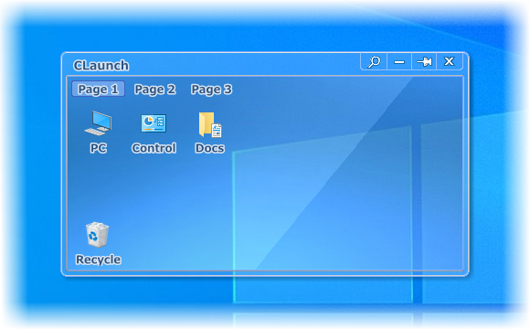

 Overview of CLaunch
Overview of CLaunch You can freely choose from over 100 different ways to display the launcher, including moving the mouse to a screen corner, double-clicking the desktop, and using hotkeys.
The launcher window disappears immediately when the cursor leaves it, so it does not interfere with your work.
Registered items can be launched directly using hotkeys or mouse actions without displaying the launcher window.
Item search by keyword input is supported, and registered items can also be launched directly using shortcut keys, allowing you to operate entirely from the keyboard.
Registered items can be grouped by page, and pages can be switched by rotating the mouse wheel.
You can further organize items within a page by creating submenus.
Per-page design settings and overlay icons make it easier to find the desired page or item.
Relative path support allows CLaunch to be stored on a USB flash drive and used on other computers.
The appearance of the launcher can be customized using skins.
You can freely choose from over 100 different ways to display the launcher, including moving the mouse to a screen corner, double-clicking the desktop, and using hotkeys.
The launcher window disappears immediately when the cursor leaves it, so it does not interfere with your work.
Registered items can be launched directly using hotkeys or mouse actions without displaying the launcher window.
Item search by keyword input is supported, and registered items can also be launched directly using shortcut keys, allowing you to operate entirely from the keyboard.
Registered items can be grouped by page, and pages can be switched by rotating the mouse wheel.
You can further organize items within a page by creating submenus.
Per-page design settings and overlay icons make it easier to find the desired page or item.
Relative path support allows CLaunch to be stored on a USB flash drive and used on other computers.
The appearance of the launcher can be customized using skins.